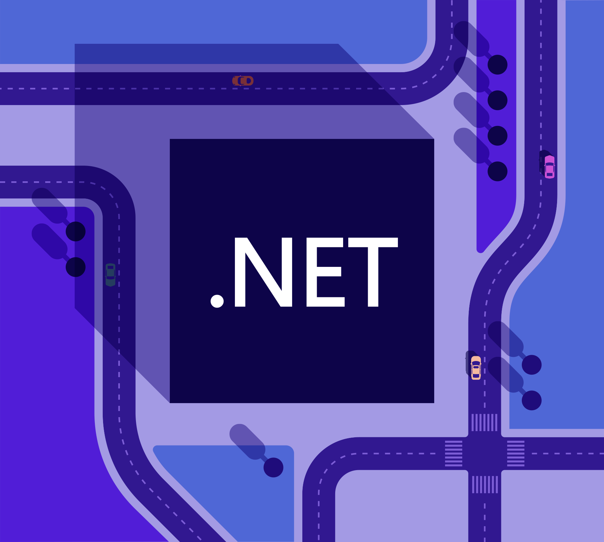

Programación de una API
Desarrollo para el back-end de tu app
El desarrollo de una API es fundamental en el backend de cualquier aplicación. Las APIs (Interfaces de Programación de Aplicaciones) permiten la comunicación entre diferentes servicios y aplicaciones, facilitando la integración y la interacción entre ellos. En el contexto del desarrollo backend, una API actúa como un intermediario que recibe solicitudes de los clientes, procesa la lógica de negocio necesaria, y devuelve las respuestas adecuadas. Esta funcionalidad es esencial para la creación de aplicaciones web robustas y escalables.
El desarrollo backend se encarga principalmente de la lógica del servidor, la administración de bases de datos y la implementación de la lógica de negocio. Tecnologías como ASP.net son ampliamente utilizadas en este ámbito debido a su robustez y capacidades. ASP.net permite a los desarrolladores crear aplicaciones web dinámicas y servicios web con características avanzadas como autenticación, autorización, y manejo eficiente de sesiones. La documentación de ASP.net proporciona una guía completa para maximizar el uso de esta tecnología en proyectos backend.
SQL (Structured Query Language) es el lenguaje estándar para gestionar y manipular bases de datos relacionales. La introducción a SQL es esencial para cualquier desarrollador backend, ya que la mayoría de las aplicaciones requieren almacenamiento y recuperación de datos de manera eficiente. SQL permite realizar operaciones como inserciones, actualizaciones, eliminaciones y consultas en bases de datos. MySQL, por ejemplo, es una de las bases de datos más populares y su documentación es un recurso invaluable para aprender a manejar bases de datos de manera efectiva.
El uso de sistemas de control de versiones como Git es otra tendencia crucial en el desarrollo backend. Git permite a los desarrolladores gestionar el código fuente de manera eficiente, realizando seguimientos de cambios, colaboraciones en equipo y revertiendo a versiones anteriores si es necesario. La documentación de Git proporciona todas las herramientas necesarias para dominar esta tecnología, que es fundamental para mantener la integridad y la coherencia del código en proyectos de desarrollo backend.
Finalmente, las tendencias actuales en el desarrollo backend incluyen el uso de microservicios, contenedores y la computación en la nube. Los microservicios permiten dividir las aplicaciones en servicios más pequeños e independientes, facilitando la escalabilidad y el mantenimiento. Los contenedores, como Docker, permiten desplegar aplicaciones de manera consistente en diferentes entornos. La computación en la nube, por su parte, ofrece infraestructura y servicios escalables bajo demanda, lo que reduce los costos y aumenta la flexibilidad en el desarrollo y despliegue de aplicaciones backend.